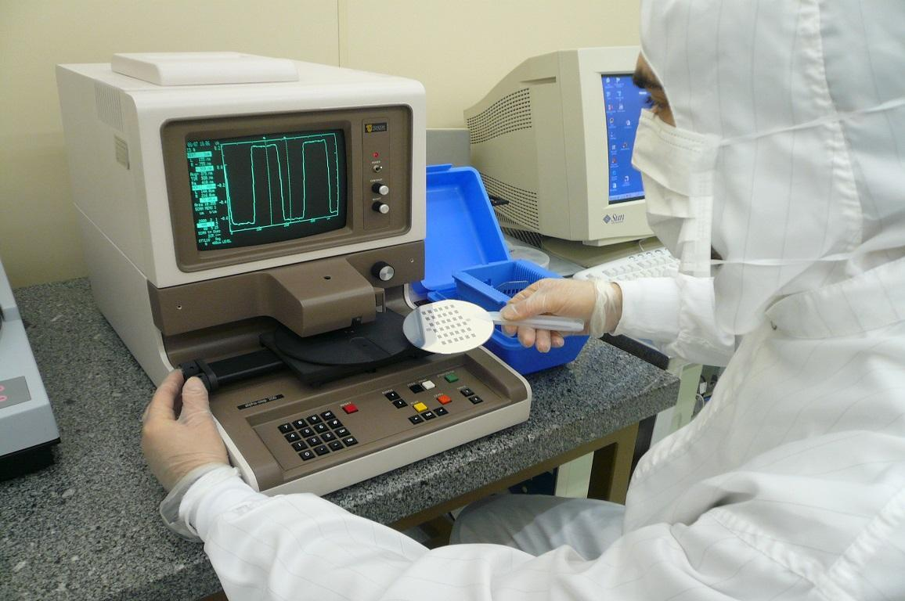

NanoFabricación

Fueron inicialmente diseñadas para su uso en la industria de semiconductores y, por lo tanto, no se desarrollaron específicamente con aplicaciones en biología o medicina en mente. Sin embargo, tanto la microfabricación como la nanofabricación han abierto una serie de oportunidades para investigar procesos químicos, biológicos y físicos a nivel celular y molecular, así como para crear dispositivos artificiales que puedan interactuar con sistemas biológicos en estos niveles.